孖仔帮与您分享双胞胎育儿经
点击蓝字
关注我们
文|圆圈妈，一个文思如尿崩的双胎妈妈
★ 前言 ★
上周圆圈妈共输出三篇干货文章介绍双胞胎婴儿车，今天来说说婴儿床。
婴儿床也是孖仔帮后台求助咨询的重灾区之一！可能是这床要服务的对象有点特别---两个双胞胎宝宝。
其实之前孖仔帮前几期有文章提到过婴儿床的种类和款式，以及圆圈兄弟这三年来的睡觉模式。
可参考《双胞胎宝宝怎么睡？这样做既省钱又安全》，关注孖仔帮，对话框输入“305”即可阅读。
今天这篇文章将会更加细节地说到一个大家普遍关心的问题：婴儿床有没有必要买？要买什么样的呢？
回答这两个问题之前，还需要解决一个问题，你希望双胞胎宝宝怎么睡？
因为双胞胎宝宝怎么睡将很大程度决定你要不要买婴儿床以及买什么样的婴儿床。
我就不卖关子了哈，看完这篇文章你就会有答案了。
注意，婴儿床的款式，材质，品牌，这篇文章不做介绍哦，因为我没有买过，了解不多，请大家不要问我这个超出我能力范围的问题了，o(╯□╰)o谢谢！
1
首先，发表下我对婴儿床的看法以及我为什么没有给圆圈兄弟买婴儿床的理由。
占地方
这是买婴儿床首要考虑的问题，意味着房间得够多，卧室得够大，不然没地摆，说啥都是徒劳。
我们当时住在深圳某城中村不到30平米的房子，圆圈兄弟还没出生，小小的一室一厅已经挤了6个人。
若再来两张婴儿床，恐怕我们要被挤到大街上去睡了。
就冲这点，我和圆圈爸没有考虑买婴儿床。
使用率不高
搬到了100多平米的大房子，依然没有要买婴儿床的意思，因为我没有机会使用！
那时候圆圈正好第二次从ICU出院回来，圆圈奶奶对两宝贝心疼的不得了，几乎片刻不离，睡觉了也要抱着他们睡。
我们苦口婆心地劝说，她依然以一种惊弓之鸟的态度回应我们，我连提出要买婴儿床的勇气都没有。
试问，面对这样的“爱孙狂魔”，婴儿床若买回来估计会被当柴烧掉…
圆圈满百天后，深圳已经入秋了，当我提起想给圆圈买婴儿车时，又被圆圈奶奶以小宝宝容易踢被子怕着凉为借口，拒绝了。
而我也在考虑，婴儿床可能用不了多久就会被搁置，通常理论跟实际操作都会相差甚远，结果到最后婴儿床只会变成占空间的大型垃圾。
看群里其他买了婴儿床的宝妈吐槽：
经常要做上，下床的动作，宝宝放婴儿床很不方便，太累人了，最后索性让宝宝跟大人一起睡在床上。
....很快....我对婴儿床的需求逐渐淡化了。
说白了还是钱的问题
以上两个问题其实都不是问题，主要是钱的问题。
我们都清楚小婴儿的睡眠很重要，两宝宝睡好了全世界才会安静下来。
而婴儿床的存在，在某种程度上就是救世主，帮助两小宝宝睡得更香更甜更安全。
我了解到的大品牌婴儿车，质量好，功能多。
刚开始是摇篮，接着婴儿床，然后还能变成小床，可以伸缩，可以折叠，可以变形，甚至可以使用到两宝宝上小学，延长了实际使用率。
可是这种婴儿床价格不菲， 光看价格，我就不想看下文了。
而如果质量不好的婴儿床，会给孩子们带来很多不可预期的危险，如困在床沿缝隙而窒息，被围栏卡主…
仔细想想，买个婴儿床要这样担惊受怕，还不如不买。
最重要一点是，还没商量好双胞胎宝宝怎么睡就买婴儿床，似乎轻率了点。
比如，你打算两宝宝自己睡，你买个拼接床，合适吗？
因此，婴儿床要不要买，先问问双胞胎宝宝要怎么睡.。
2
混在各大双胞胎育儿群，经过与同频道的双胞胎妈妈交流心得体会后，得出目前双胞胎宝宝的睡觉模式主要有以下3种：
两宝宝自己睡，跟爸爸妈妈一起睡，爸爸妈妈和公婆（月嫂）分别第一个睡。
很荣幸，这三种睡觉模式，我都体验过。
下面简析对以上三种睡法的看法以及三种睡法对婴儿床的要求。
两宝宝自己睡
这种是目前各种育儿大咖极力推崇和提倡的，但却最不被双胞胎家庭落到实处的。
实在是各方阻力太多了，力不从心。
其实，我赞同母婴同房不同床，小宝宝在婴儿时期就应该有自己的独立小床。
但，赞同有什么用，又不能当饭吃！
有时候，人不得不低头。
我起初很坚定不移地让圆圈自己睡，主要是希望从小就培养他们独立睡小床的习惯。
长远来说，与大人彼此分开睡，大家的睡眠质量也会更好，皆大欢喜。
而宝宝大一点的时候，这个小床也可以作为将两宝宝们圈起来的一个安全的游乐园。
然后，对于我这样的双胞胎家庭，要执行起来，实在太困难了。
小月龄的圆圈兄弟多半是半夜哭闹，两人睡在一起会互相干扰，把对方吵醒，再大一点会把对方踹醒。
若一人生病，另一个很容易交叉感染。
而最重要一点是大人不方便照顾，也许这就是不被众多双胞胎家庭认可的最大原因。
孩子哭闹了，要喝奶了，换尿布了，踢被子了….都需要大人亲自过去安抚。
人在深度睡眠的时候，挣扎着起床去折腾两宝的屎尿屁，得需要多大的勇气啊，而且一个晚上有可能需要无底线地起来N次。
上神小仙都觉得仙气不够，别说是正常人了。
圆圈兄弟的独立睡眠坚持了1个月，就因各种原因中断了。
只能说，理想很丰满，现实很骨感。
这种睡眠模式是短期内最累人最折腾人的方式，很少有人看到婴儿独睡和对后期育儿的种种好处。
但是若你有远大志向并愿意排除万难付诸行动，一心一意坚持引导两宝宝走这种睡觉模式，建议买两张独立的婴儿床，减少互相干扰。
当然质量必须要严格把关。
爸爸妈妈带一个睡，
公婆（月嫂）带另一个睡
圆圈独立睡觉的模式失败后，就变成爸爸妈妈带一个睡，爷爷奶奶带另一个睡，隔一个星期就把他们哥俩互相换回来。
这样的好处是大家晚上只需要照顾一个孩子，相对没那么累，辛苦指数大大下降了不少。
更重要的是两宝宝分开房间睡，避免相互干扰。
可是我觉得不到万不得已，这是下下策！若不是形势所逼，我非常不赞成这种睡法。
两宝宝会不适应，经常这样更换，会让他们没有安全感。好不容易熟悉了这个人，结果又换成另外一个人。
他们若是会表达，一定不喜欢这样被换来换去。
他们从小胚芽开始就一直在一起，他们已经习惯了彼此，习惯在一起的感觉，习惯了闻到彼此的气息，仅仅因为方便大人照顾，而人为把他们分开，会不会残忍了点？
那时候圆圈4个月左右，已经会认生了。
因为我已经回归职场，他们接触我比较少，每次轮到我带着睡，他们就异常哭闹，睡不好。
由于不停地更换，导致他们不适应，那段时间状态很不好，不肯喝奶，烦躁，难安抚。
可能他们哥俩彼此思念，也可能他们习惯了他们的爷爷奶奶…反正，他们不愿意了，抗议了！
还有一点，也是我最不能接受的一点，我不赞成老人家带孩子睡觉。
我们老家有个很迷信的说法，老人家带孩子睡觉会吸走小孩子的阳气，从而导致孩子体弱多病。
吸走阳气的说法有点欠妥，但大人带着小婴儿睡觉，却有很多风险，如睡着的时候不注意，对着小婴儿呼吸，这样可能会导致婴儿吸收氧气不足。
这是有科学根据的！
圆圈奶奶睡觉时候，经常把圆圆或者圈圈搂在臂弯里睡觉。
两人靠这么近，若是大人有什么病菌分分钟会传染给体质差，免疫力低下的圆圈。
我们沟通过好几次，可是无果…这最终导致我和圆圈爸做出带圆圈兄弟睡觉的决定。
其实，应该很多双胞胎家庭会走这个睡眠模式，除了不用那么辛苦，还可以省去买婴儿床的烦恼，因为通常一张1米8 的床足够容纳两大一小，几乎不用另外买婴儿床。
但其中的利弊，就见仁见智了。
跟爸爸妈妈一起睡
我们总结了下，圆圈体重和身高都没有怎么长，可能跟睡眠质量差有关，而罪魁祸首就是这种交换睡眠模式。
我咬咬牙把两个都抱过来睡，宁可自己累点也坚决不换！
当时圆圈才6个月，一家四口挤在一米五的床上，小小的窝虽然很挤，可是很温馨。
这样做的好处是亲子感情增进不少。
可能是剖腹产的原因，我对刚出生的圆圈兄弟很陌生，只知道那两个是我的儿子们，仅此而已。
在后面的苦逼育儿路上，尤其是带着他们一起睡，经历过拼凑式睡眠的酷刑后，我终于对他们又爱又恨了。
这种模式，最不好的就是（很累+很累）的N次方。
在他们能睡整夜觉之前，没有睡过一次好觉，我和圆圈爸白天上班，晚上轮流守夜照顾两娃。
那段时间，感觉自己每天就靠一口仙气活着，随便一阵风就能把我吹得灰飞烟灭。
这里有一个对双胞胎爸爸的建议，尤其是坚持喂母乳的双胞胎家庭。
宝妈喂完奶之后，宝爸应主动揽下后续的任务，如拍嗝，陪聊，哄睡…
相比宝妈的十月怀胎和十级阵痛，这点辛苦真不算什么。
你不能代替老婆生孩子，总能代替她养孩子吧！
我没有喂母乳，每次他们夜醒找奶喝都是圆圈爸第一时间响应，火速冲好奶粉递给我喂，或者他来喂，我来拍嗝哄睡，有时候我起不来，全程都是圆圈爸伺候着两个崽。
我不知道他是怎么做到的，反正我睡着了。
为了避免我太死睡压到他们或者跟圆圈奶奶一样犯同样的错误，圆圈爸主动揽下重任，一人带着两个崽睡同一头。
而我只需要缩在某个角落，该干嘛干嘛去！我更加有理由假装不知道，哪里凉快哪里睡了。
这种睡眠模式，就要买拼接床。
款式材质方面，可以看下其他过来人分享的婴儿床攻略。
小提示，注意大人床和小孩子床的拼接处，尽量不要一高一低。
双胞胎宝宝如何睡觉，我的答案是…
首选爸爸妈妈带着睡，其次是两宝宝自己睡，最后才是爸爸妈妈和爷爷奶奶分别带一个睡。
你的答案呢？欢迎留言！
重要通知
孖仔帮有双胞胎爸爸专属群啦！
在此你们可以互相交流下初为人父的喜悦和已为人父的辛酸，还有你们男人间的家长里短…尽情唠嗑吧！
入群方式：关注孖仔帮，＋圆圈妈的微信(sgguy-com)，我会发群聊邀请给你们。欢迎准爸爸的加入双胞胎育儿大家庭，一起分享双胞胎育儿经。
#重磅互动#
评论区聊一聊
你希望圆圈妈写什么干货？
随便提，万一下篇就写了呢？
END
本文系圆圈妈sgguy-com原创，来源于孖仔帮，专注双胞胎孕期育儿经验分享，著作权归孖仔帮所有。
212:原来双胎妈妈可以这样数胎动，好简单啊
215:双胎子宫日记系列|（下）你看不看？双胞胎妈妈直播剖腹产全过程
302:喂养干货||如何训练双胞胎宝宝睡整夜觉
306: 真人示范！双胞胎妈妈高难度喂母乳技巧
219双胞胎准爸爸的生存指南：不做猪一样的队友，活着出来喜当爹
220双胞胎准妈妈，其实你的产检方式一直搞错了…
222:看过这份最简单的双胞胎宝宝用品囤货清单，其他的都是将就
712：双十一囤货：我为什么不买并排式的双胞胎婴儿车，这篇文章有答案
304:家有双胞胎宝宝，这6个小贴士越早知道越好
305:双胞胎宝宝怎么睡？这样做既省钱又安全
303:干货||配方奶喂养的双胞胎宝宝囤货用品清单
309: 如何顺利度过双胞胎宝宝的第一年
710:双胎妈妈囤货建议||这6个育儿神器，吃土也要买
我猜你肯定喜欢看上面的文章，对不对嘛？关注孖仔帮，回复文章前面的数字编号即可阅读。
长按识别二维码关注我们
关于这个号
谢谢关注！我是圆圈妈
85后，全职双胎妈妈
家有孖仔男宝两枚，圆圈&圈圈
双胞胎育儿公众号：孖仔帮
旨意分享双胞胎育儿经验帮助双胞胎家庭
有经验可循
有组织可靠
希望我的经验对您有所启发
期待与您一起共享双胞胎育儿经
孖仔帮目前有4个微信社群
孕期群，喂养群，闲置群，双胞胎爸爸专属群，
如需入交流群，请+圆圈妈的微信号sgguy-com,或扫描下方二维码
由圆圈妈邀请入群
更多孖仔帮双胞胎原创育儿文章请猛戳 "阅读原文" 或者直接上圆圈妈的个人博客。
博客链接：https://www.sgguy.com/twinsbang

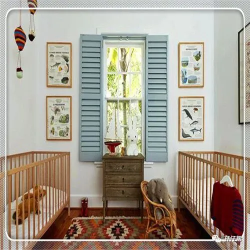
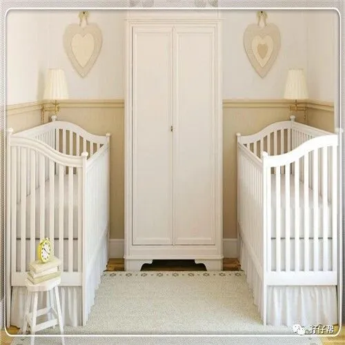
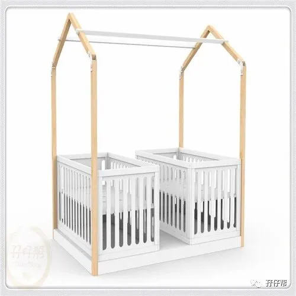
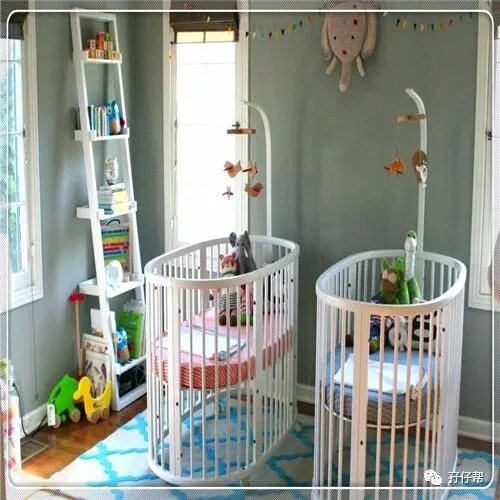
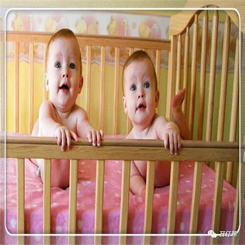
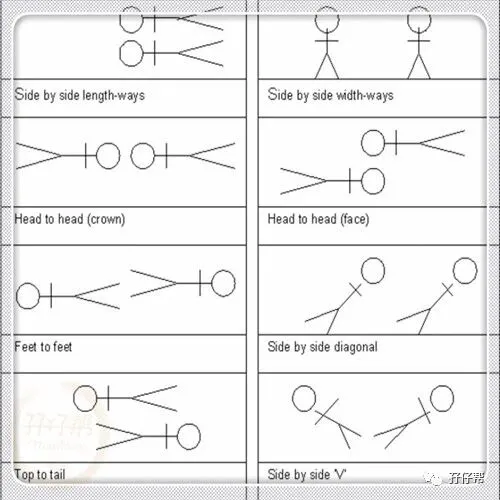
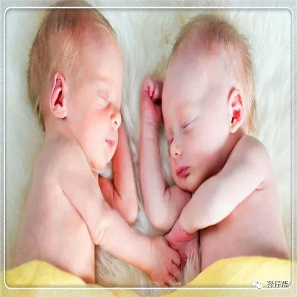
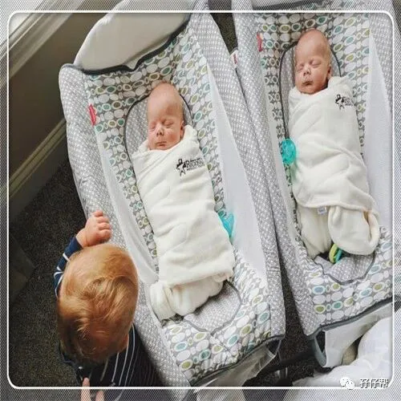
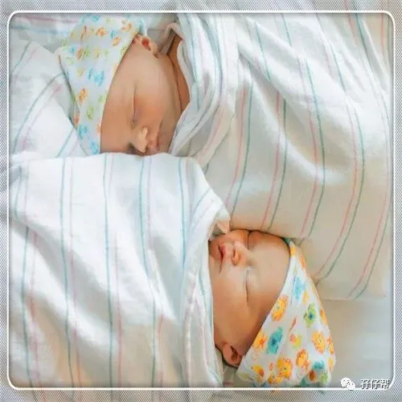
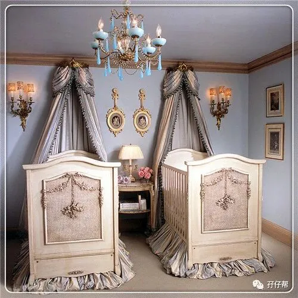
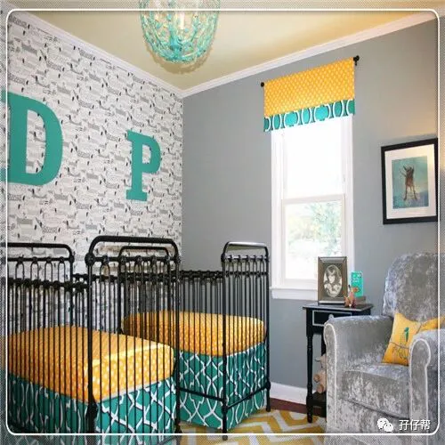
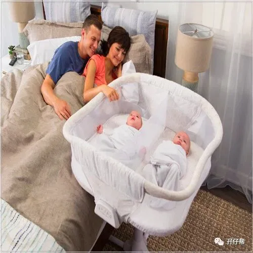
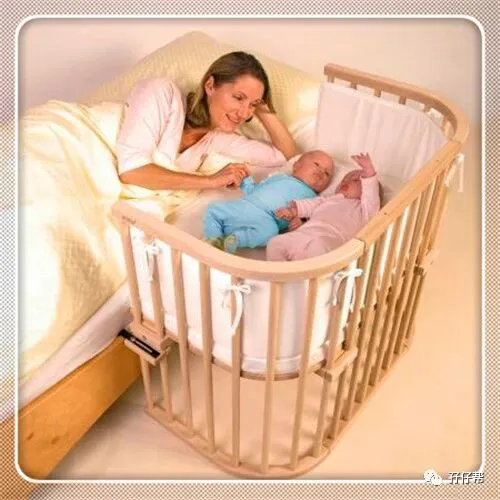
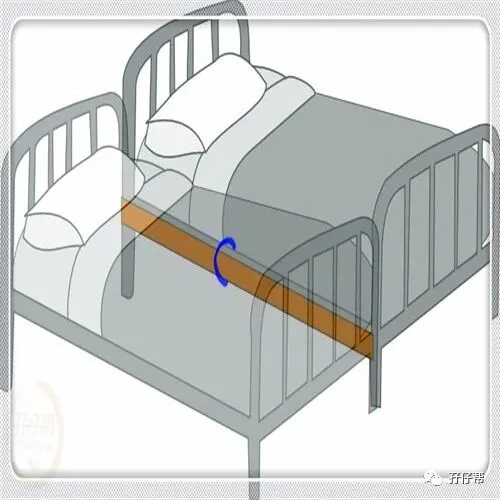